For this week’s exercise, I will continue to work on some more tidymodeling using the marble runs dataset. You can find the original data and more information in the link.
library(here) #to set path for importing data
library(skimr)
library(readr)
library(dplyr) #for data wrangling and cleaning
library(tidymodels) # for model fitting
library(tidyverse) # data wrangling
library(dotwhisker) # for visualizing regression results
library(lme4) # for fitting multilevel models
library(gtsummary)
library(gt)
library(ggpubr) # for ggarrange function
library(tidymodels) #for model fitting
library(tidyverse) #for data processing
library(rsample) #for data splitting
library(parsnip)
library(rpart) # for tree-based model
library(glmnet) #
library(ranger) #
library(dials) # for creating a grid of values
library(rpart.plot) # for visualizing decision tree
library(vip) # estimate variable importance based on the model’s structure
library(ggpubr) # ggarrange
library(Hmisc)
library(naniar)
library(tictoc)
library(xgboost)
library(LiblineaR)
library(finetune)
library(kableExtra)# Get the Data
marbles <- readr::read_csv('https://raw.githubusercontent.com/rfordatascience/tidytuesday/master/data/2020/2020-06-02/marbles.csv')##
## -- Column specification --------------------------------------------------------
## cols(
## date = col_character(),
## race = col_character(),
## site = col_character(),
## source = col_character(),
## marble_name = col_character(),
## team_name = col_character(),
## time_s = col_double(),
## pole = col_character(),
## points = col_double(),
## track_length_m = col_double(),
## number_laps = col_double(),
## avg_time_lap = col_double(),
## host = col_character(),
## notes = col_character()
## )| Name | marbles |
| Number of rows | 256 |
| Number of columns | 14 |
| _______________________ | |
| Column type frequency: | |
| character | 9 |
| numeric | 5 |
| ________________________ | |
| Group variables | None |
Variable type: character
| skim_variable | n_missing | complete_rate | min | max | empty | n_unique | whitespace |
|---|---|---|---|---|---|---|---|
| date | 0 | 1.00 | 8 | 9 | 0 | 16 | 0 |
| race | 0 | 1.00 | 4 | 4 | 0 | 16 | 0 |
| site | 0 | 1.00 | 7 | 15 | 0 | 8 | 0 |
| source | 0 | 1.00 | 34 | 34 | 0 | 16 | 0 |
| marble_name | 0 | 1.00 | 4 | 9 | 0 | 32 | 0 |
| team_name | 0 | 1.00 | 6 | 16 | 0 | 16 | 0 |
| pole | 128 | 0.50 | 2 | 3 | 0 | 16 | 0 |
| host | 0 | 1.00 | 2 | 3 | 0 | 2 | 0 |
| notes | 249 | 0.03 | 37 | 100 | 0 | 7 | 0 |
Variable type: numeric
| skim_variable | n_missing | complete_rate | mean | sd | p0 | p25 | p50 | p75 | p100 | hist |
|---|---|---|---|---|---|---|---|---|---|---|
| time_s | 3 | 0.99 | 190.84 | 169.13 | 17.76 | 28.40 | 36.28 | 338.16 | 492.01 | <U+2587><U+2581><U+2581><U+2587><U+2581> |
| points | 128 | 0.50 | 6.45 | 7.74 | 0.00 | 0.00 | 3.00 | 11.25 | 26.00 | <U+2587><U+2582><U+2582><U+2581><U+2581> |
| track_length_m | 0 | 1.00 | 13.22 | 0.95 | 11.90 | 12.62 | 13.02 | 14.13 | 14.55 | <U+2585><U+2585><U+2582><U+2581><U+2587> |
| number_laps | 0 | 1.00 | 6.25 | 5.53 | 1.00 | 1.00 | 5.00 | 10.25 | 16.00 | <U+2587><U+2581><U+2583><U+2582><U+2582> |
| avg_time_lap | 3 | 0.99 | 29.70 | 5.55 | 17.76 | 25.94 | 30.05 | 33.65 | 41.62 | <U+2583><U+2586><U+2587><U+2587><U+2582> |
First, let’s explore the dataset by looking at the
## Rows: 256
## Columns: 14
## $ date <chr> "15-Feb-20", "15-Feb-20", "15-Feb-20", "15-Feb-20", "15~
## $ race <chr> "S1Q1", "S1Q1", "S1Q1", "S1Q1", "S1Q1", "S1Q1", "S1Q1",~
## $ site <chr> "Savage Speedway", "Savage Speedway", "Savage Speedway"~
## $ source <chr> "https://youtu.be/JtsQ_UydjEI?t=356", "https://youtu.be~
## $ marble_name <chr> "Clementin", "Starry", "Momo", "Yellow", "Snowy", "Razz~
## $ team_name <chr> "O'rangers", "Team Galactic", "Team Momo", "Mellow Yell~
## $ time_s <dbl> 28.11, 28.37, 28.40, 28.70, 28.71, 28.72, 28.96, 29.11,~
## $ pole <chr> "P1", "P2", "P3", "P4", "P5", "P6", "P7", "P8", "P9", "~
## $ points <dbl> NA, NA, NA, NA, NA, NA, NA, NA, NA, NA, NA, NA, NA, NA,~
## $ track_length_m <dbl> 12.81, 12.81, 12.81, 12.81, 12.81, 12.81, 12.81, 12.81,~
## $ number_laps <dbl> 1, 1, 1, 1, 1, 1, 1, 1, 1, 1, 1, 1, 1, 1, 1, 1, 10, 10,~
## $ avg_time_lap <dbl> 28.11, 28.37, 28.40, 28.70, 28.71, 28.72, 28.96, 29.11,~
## $ host <chr> "No", "No", "No", "No", "No", "No", "No", "No", "No", "~
## $ notes <chr> NA, NA, NA, NA, NA, NA, NA, NA, NA, NA, NA, NA, NA, NA,~# descriptive summary table
marbles %>%
# select only important variables
select(2,3,5:13) %>%
tbl_summary() %>%
modify_header(label ~ "**Variable**") %>%
bold_labels() %>%
as_flex_table()Variable | N = 2561 |
race | |
S1Q1 | 16 (6.2%) |
S1Q2 | 16 (6.2%) |
S1Q3 | 16 (6.2%) |
S1Q4 | 16 (6.2%) |
S1Q5 | 16 (6.2%) |
S1Q6 | 16 (6.2%) |
S1Q7 | 16 (6.2%) |
S1Q8 | 16 (6.2%) |
S1R1 | 16 (6.2%) |
S1R2 | 16 (6.2%) |
S1R3 | 16 (6.2%) |
S1R4 | 16 (6.2%) |
S1R5 | 16 (6.2%) |
S1R6 | 16 (6.2%) |
S1R7 | 16 (6.2%) |
S1R8 | 16 (6.2%) |
site | |
Greenstone | 32 (12%) |
Hivedrive | 32 (12%) |
Midnight Bay | 32 (12%) |
Momotorway | 32 (12%) |
O'raceway | 32 (12%) |
Razzway | 32 (12%) |
Savage Speedway | 32 (12%) |
Short Circuit | 32 (12%) |
marble_name | |
Anarchy | 8 (3.1%) |
Billy | 8 (3.1%) |
Bolt | 8 (3.1%) |
Clementin | 8 (3.1%) |
Clutter | 8 (3.1%) |
Hazy | 8 (3.1%) |
Hive | 8 (3.1%) |
Limelime | 8 (3.1%) |
Mallard | 8 (3.1%) |
Mary | 8 (3.1%) |
Mimo | 8 (3.1%) |
Momo | 8 (3.1%) |
Orangin | 8 (3.1%) |
Prim | 8 (3.1%) |
Pulsar | 8 (3.1%) |
Rapidly | 8 (3.1%) |
Razzy | 8 (3.1%) |
Rezzy | 8 (3.1%) |
Rojo Dos | 8 (3.1%) |
Rojo Uno | 8 (3.1%) |
Shock | 8 (3.1%) |
Smoggy | 8 (3.1%) |
Snowflake | 8 (3.1%) |
Snowy | 8 (3.1%) |
Speedy | 8 (3.1%) |
Starry | 8 (3.1%) |
Sublime | 8 (3.1%) |
Vespa | 8 (3.1%) |
Wispy | 8 (3.1%) |
Wospy | 8 (3.1%) |
Yellow | 8 (3.1%) |
Yellup | 8 (3.1%) |
team_name | |
Balls of Chaos | 16 (6.2%) |
Green Ducks | 16 (6.2%) |
Hazers | 16 (6.2%) |
Hornets | 16 (6.2%) |
Limers | 16 (6.2%) |
Mellow Yellow | 16 (6.2%) |
Midnight Wisps | 16 (6.2%) |
O'rangers | 16 (6.2%) |
Raspberry Racers | 16 (6.2%) |
Rojo Rollers | 16 (6.2%) |
Savage Speeders | 16 (6.2%) |
Snowballs | 16 (6.2%) |
Team Galactic | 16 (6.2%) |
Team Momo | 16 (6.2%) |
Team Primary | 16 (6.2%) |
Thunderbolts | 16 (6.2%) |
time_s | 36 (28, 338) |
Unknown | 3 |
pole | |
P1 | 8 (6.2%) |
P10 | 8 (6.2%) |
P11 | 8 (6.2%) |
P12 | 8 (6.2%) |
P13 | 8 (6.2%) |
P14 | 8 (6.2%) |
P15 | 8 (6.2%) |
P16 | 8 (6.2%) |
P2 | 8 (6.2%) |
P3 | 8 (6.2%) |
P4 | 8 (6.2%) |
P5 | 8 (6.2%) |
P6 | 8 (6.2%) |
P7 | 8 (6.2%) |
P8 | 8 (6.2%) |
P9 | 8 (6.2%) |
Unknown | 128 |
points | 3 (0, 11) |
Unknown | 128 |
track_length_m | |
11.9 | 32 (12%) |
12.05 | 32 (12%) |
12.81 | 32 (12%) |
12.84 | 32 (12%) |
13.2 | 32 (12%) |
14.05 | 32 (12%) |
14.38 | 32 (12%) |
14.55 | 32 (12%) |
number_laps | |
1 | 128 (50%) |
9 | 32 (12%) |
10 | 32 (12%) |
11 | 16 (6.2%) |
13 | 16 (6.2%) |
14 | 16 (6.2%) |
16 | 16 (6.2%) |
avg_time_lap | 30 (26, 34) |
Unknown | 3 |
host | 16 (6.2%) |
1n (%); Median (IQR) | |
There are 16 races, 8 sites, 32 marble names, 16 teams, 17 different pole positions, 8 different track lengths. Next, I want to examine whether the missing data varies by race sites.
# check percentage of missing values in each column by flu season
aggregate(marbles , by=list(marbles$site), FUN = function(x) { sum(is.na(x))/length(x)*100 })## Group.1 date race site source marble_name team_name time_s pole
## 1 Greenstone 0 0 0 0 0 0 0.000 50
## 2 Hivedrive 0 0 0 0 0 0 3.125 50
## 3 Midnight Bay 0 0 0 0 0 0 0.000 50
## 4 Momotorway 0 0 0 0 0 0 0.000 50
## 5 O'raceway 0 0 0 0 0 0 3.125 50
## 6 Razzway 0 0 0 0 0 0 0.000 50
## 7 Savage Speedway 0 0 0 0 0 0 0.000 50
## 8 Short Circuit 0 0 0 0 0 0 3.125 50
## points track_length_m number_laps avg_time_lap host notes
## 1 50 0 0 0.000 0 100.000
## 2 50 0 0 3.125 0 100.000
## 3 50 0 0 0.000 0 93.750
## 4 50 0 0 0.000 0 100.000
## 5 50 0 0 3.125 0 100.000
## 6 50 0 0 0.000 0 87.500
## 7 50 0 0 0.000 0 100.000
## 8 50 0 0 3.125 0 96.875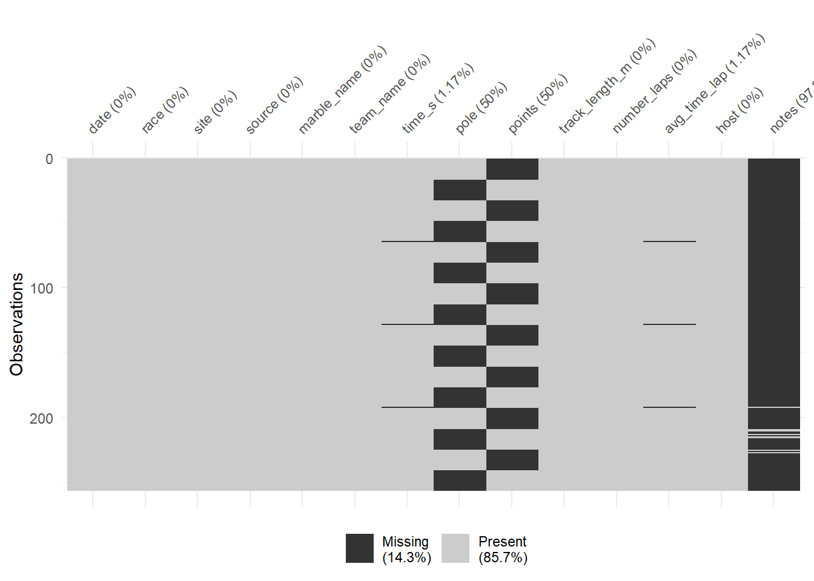
It looks like pole positions and points gained had 50% data missing, and there are some missingness in time in seconds and average lap time. In addition, the last two information were only missing in three sites.
For further analysis, I will remove missing data since there are only less than 10% missing. Both variables, pole and points will be drop from the analysis due to substantial missing data. Let’s clean up the data now!
marbles.clean <-
marbles %>%
# exclude variables that will not be included for analysis as well
select(-date, -source, -pole, -points, -notes) %>%
drop_na(time_s, avg_time_lap)In Randy’s blogpost, he mentioned that he had to standardize the race times since each race track took a varying amount of time. I will also standardize the data using the same approach. First, I will calculate the average race time for different race and divide individual marble’s time by the average. This way, we will get the standardized performance in each race for each marble, checking how better or worse the marble performed compared to that race track.
# plotting for the continuous outcome, std_time
marbles.clean %>%
ggplot(aes(x=std_time)) +
geom_histogram(bins = 100) +
xlab("Standardized race time for individual marble relative to average race time") +
ylab("Frequency") +
ggtitle("Histogram of standardized race time") +
theme_bw()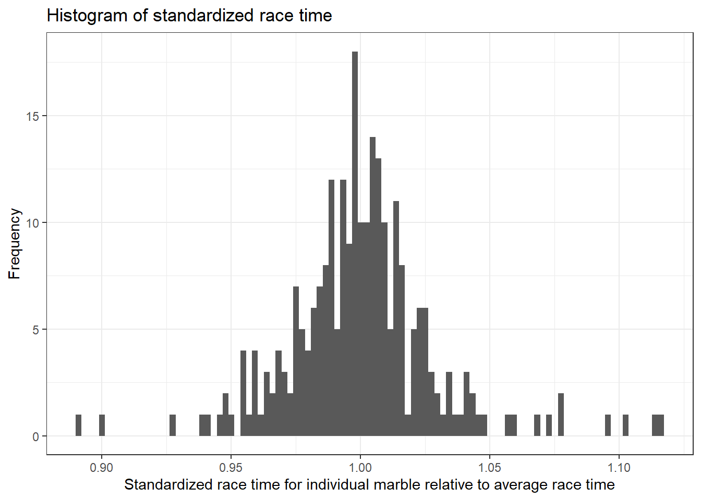
We can see that the standardized race time for each marble follows a normal distribution.
Next, I want to know which team performed the best, and whether specific marble ran faster.
# boxplot of standardized race time by track team
marbles.clean %>%
ggplot(aes(x=team_name, y=std_time)) +
geom_boxplot() +
xlab("") +
ylab("Standardized race time") +
theme(axis.text.x = element_text(angle = 45, hjust=1)) +
ggtitle("Boxplot of standardized race time by track team")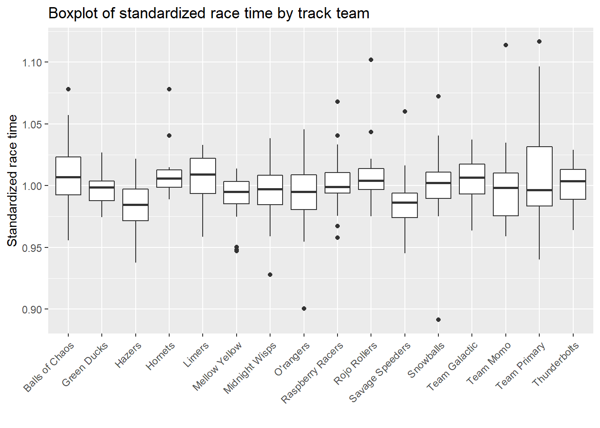
# boxplot of standardized race time by marble
marbles.clean %>%
ggplot(aes(x=marble_name, y=std_time)) +
geom_boxplot() +
xlab("") +
ylab("Standardized race time") +
theme(axis.text.x = element_text(angle = 45, hjust=1)) +
ggtitle("Boxplot of standardized race time by marble")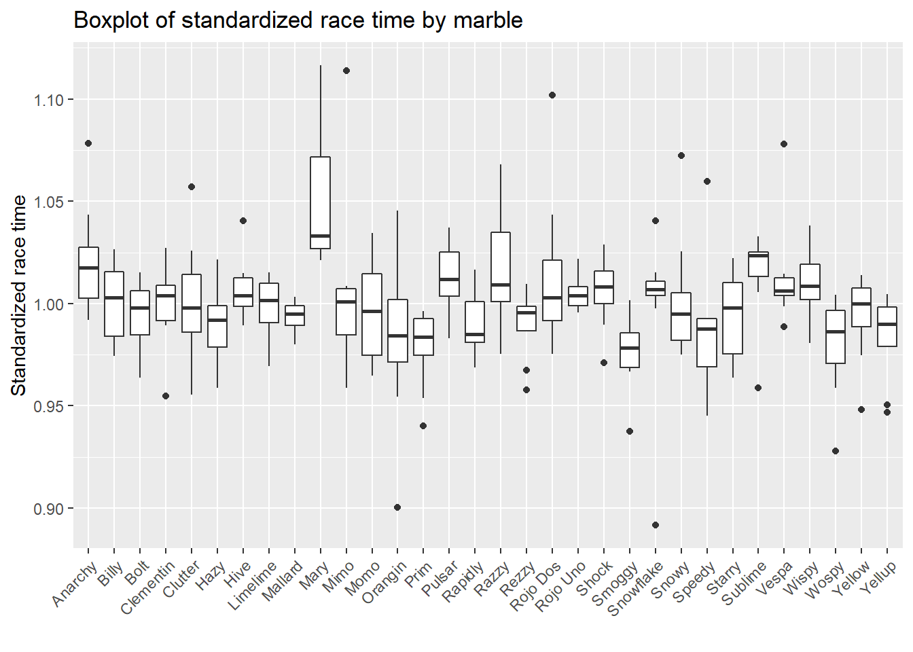
The main outcome of interest is the standardized race time, and we will fit six candidate predictors in four different ML models to determine their predictive ability. Next, I will create outcome and predictor variables needed for modeling.
# create variables for modeling
marbles.final <-
marbles.clean %>%
transmute(
race = factor(race),
marble = factor(marble_name),
team = factor(team_name),
host = factor(host),
track_length_m = as.numeric(track_length_m),
number_laps = as.numeric(std_time),
std_time = as.numeric(std_time)
)# Data Splitting------------------------------------------------------
#set seed to fix random numbers
set.seed(123)
# put 0.7 of data into training set, use BodyTemp as stratification
data_split <- initial_split( marbles.final,
prop = 0.7,
strata = std_time)
# create data frames for training and testing sets
train_data <- training(data_split)
test_data <- testing(data_split)
# create 5-fold cross-validation, 5 times repeated
folds <- vfold_cv(train_data, v = 5, repeats =5, strata = std_time)
# create recipe fitting BodyTemp to all predictors
rec <- recipes::recipe(std_time ~ ., data = train_data)
# create dummy variable for all predictors
rec_all_pred <- rec %>%
#converts characters or factors
step_dummy(all_nominal()) %>%
#removes indicator variables that only contain a single unique value
step_zv(all_predictors())I first followed the tidymodels tutorial for training the model using tree regression method, but I got the error of the "“a correlation computation is required, but ‘estimate’ is constant and has…” when I used dials to search for all tuning combinations to try for each hyperparameter, and the final tree didn’t perform well, and only include sneeze as only predictor. I would like to thank Zane for the inspiration, I used “grid_latin_hypercube” for defining a grid of potential parameter values, and the codes ran without any error.
# model specification
tree_spec <-
decision_tree(
cost_complexity = tune(),
tree_depth = tune(),
min_n = tune() # sets the minimum n to split at any node.
) %>%
set_engine("rpart") %>%
set_mode("regression")
tree_spec## Decision Tree Model Specification (regression)
##
## Main Arguments:
## cost_complexity = tune()
## tree_depth = tune()
## min_n = tune()
##
## Computational engine: rpart# we will train this specification on several re-sampled data
tree_wf <- workflow() %>%
add_model(tree_spec) %>%
add_recipe(rec_all_pred)
# define a grid of potential parameter values using latin hypercube sampling
tree_grid <- grid_latin_hypercube(
cost_complexity(), tree_depth(), min_n(), size = 10
)
# Grid search for parameter values
tree_res <- tree_wf %>%
tune_grid(
resamples = folds,
grid = tree_grid,
metrics = metric_set(rmse),
control = control_grid(verbose = TRUE),
)
# Select single set of hyperparameter values for our best decision tree model
best_tree <- select_best(tree_res)
# Finalize our workflow with best values
final_tree_wf <- tree_wf %>%
finalize_workflow(best_tree)
# Fit model to training data
best_tree_train_fit <- final_tree_wf %>%
fit(data = train_data)
png(filename = here::here("tidytuesday2_figures", "tree_algorithms.png"), width = 1200, height = 1000)
rpart.plot::rpart.plot(
x = extract_fit_parsnip(best_tree_train_fit)$fit,
main = "Final tree-based model",
roundint = F,
type = 5,
digits = 4
)
dev.off()## png
## 2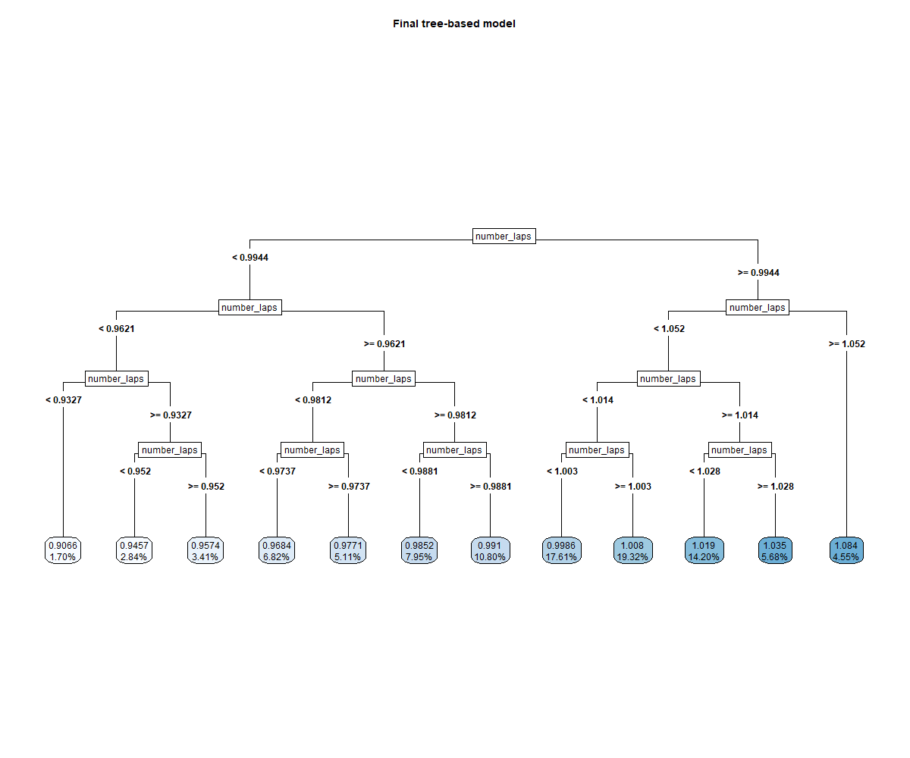
# estimate model importance based on the model's structure
vip_tree <-
best_tree_train_fit %>%
extract_fit_parsnip() %>%
vip()
vip_tree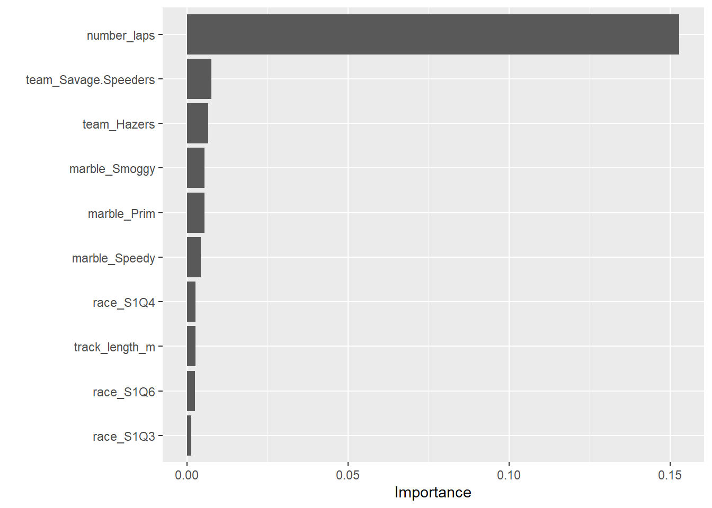
Number of laps is the strongest predictor of the race time.
# some more diagnostics
tree_diagnostics <-
tree_res %>% autoplot()
ggsave(filename = here::here("tidytuesday2_figures", "tree_diagnostics.png"),
plot = tree_diagnostics,
width = 12, height = 6)
knitr::include_graphics( here::here("tidytuesday2_figures", "tree_diagnostics.png"))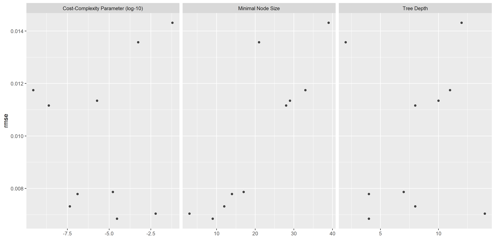
# pull predictions and residuals
tree_train_res <- best_tree_train_fit %>%
augment(new_data = train_data) %>%
select(.pred, std_time) %>%
mutate(.resid = std_time - .pred)
# plot Predictions vs observed values
p1 <- ggplot(tree_train_res, aes(x = std_time, y = .pred)) +
geom_abline(slope = 1, intercept = 0, color = "red", lty = 2) +
geom_point() +
cowplot::theme_cowplot() +
labs(
title = "Decision tree: predicted vs observed",
x = "Observed",
y = "Fitted"
)
# Plot model predictions vs residuals
p2 <- ggplot(tree_train_res, aes(y = .resid, x = .pred)) +
geom_hline(yintercept = 0, color = "red", lty = 2) +
geom_point() +
cowplot::theme_cowplot() +
labs(
title = "Decision tree: residuals vs fitted",
y = "Residuals",
x = "Fitted"
)
# combine graphs
tree_panel <- cowplot::plot_grid(p1, p2, labels = c('A', 'B'), label_size = 12, ncol =2)
ggsave(filename = here::here("tidytuesday2_figures", "tree_panel.png"),
plot = tree_panel,
width = 12, height = 6)
knitr::include_graphics( here::here("tidytuesday2_figures", "tree_panel.png"))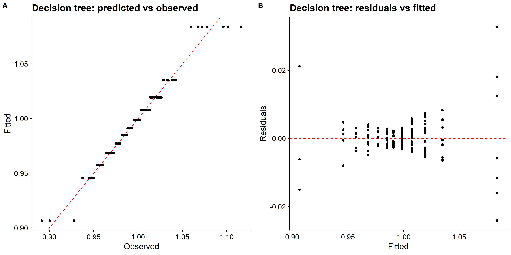
# looking at model performance
tree_perfomance <- tree_res %>% show_best(n = 1)
print(tree_perfomance) # rmse: 0.0068## # A tibble: 1 x 9
## cost_complexity tree_depth min_n .metric .estimator mean n std_err
## <dbl> <int> <int> <chr> <chr> <dbl> <int> <dbl>
## 1 0.0000297 4 9 rmse standard 0.00685 25 0.000517
## # ... with 1 more variable: .config <chr>The RMSE of the regression tree model is small and the predicted vs observed plot looks good. All the data points seem to align with the diagonal line.
# LASSO model specification
lasso_spec <-
linear_reg(
penalty = tune(),
mixture = 1 # make this LASSO
) %>%
set_engine("glmnet") %>%
set_mode("regression")
lasso_spec## Linear Regression Model Specification (regression)
##
## Main Arguments:
## penalty = tune()
## mixture = 1
##
## Computational engine: glmnetlasso_wf <- workflow() %>%
add_model(lasso_spec) %>%
add_recipe(rec_all_pred)
# only one hyperparameter to tune here, we can set the grid up manually using a one-column # tibble with 30 candidate values
lasso_grid <- tibble(penalty = 10^seq(-4, -1, length.out = 30))
# use grid search to tune hyperparameters using cross-validation
lasso_res <- lasso_wf %>%
tune::tune_grid(
resamples = folds,
grid = lasso_grid,
metrics = metric_set(rmse),
control = control_grid(verbose = TRUE)
)
# pull the best tuning parameter values
best_lasso <- select_best(lasso_res)
# Finalize workflow with best values
final_lasso_wf <- lasso_wf %>%
finalize_workflow(best_lasso)
# Fit model to training data
best_lasso_train_fit <- final_lasso_wf %>% fit(data = train_data)## Warning in plotCoef(x$beta, lambda = x$lambda, df = x$df, dev = x$dev.ratio, : 1
## or less nonzero coefficients; glmnet plot is not meaningful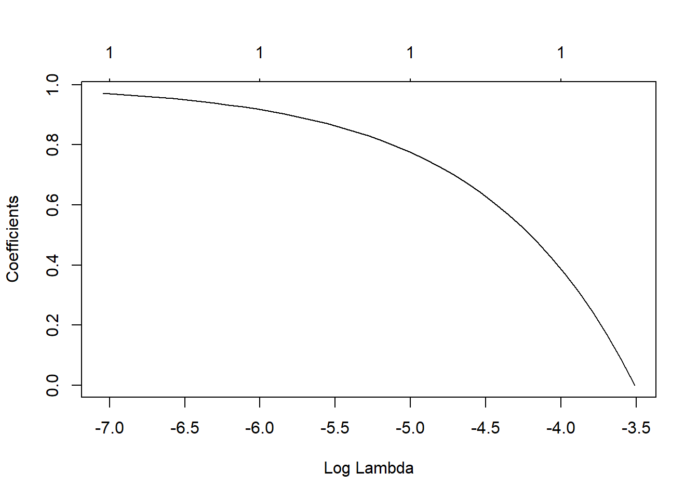
# some more diagnostics
lasso_diagnostics <-
lasso_res %>% autoplot()
ggsave(filename = here::here("tidytuesday2_figures", "lasso_diagnostics.png"),
plot = lasso_diagnostics,
width = 12, height = 6)
knitr::include_graphics( here::here("tidytuesday2_figures", "lasso_diagnostics.png"))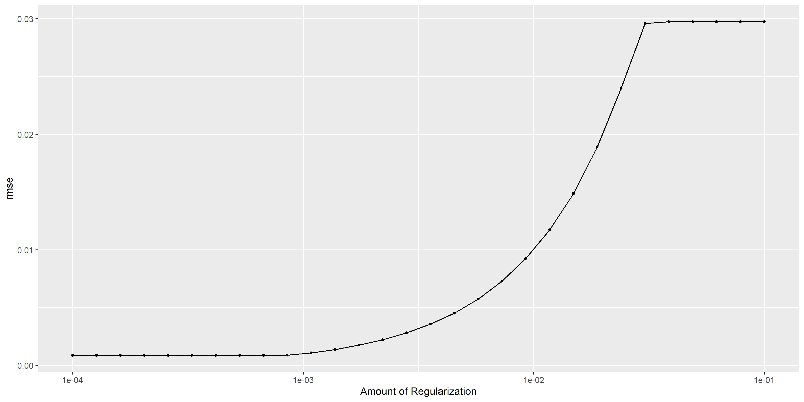
# pull predictions and residuals
lasso_train_res <- best_lasso_train_fit %>%
augment(new_data = train_data) %>%
select(.pred, std_time) %>%
mutate(.resid = std_time - .pred)
# plot Predictions vs observed values
p1 <- ggplot(lasso_train_res, aes(x = std_time, y = .pred)) +
geom_abline(slope = 1, intercept = 0, color = "red", lty = 2) +
geom_point() +
cowplot::theme_cowplot() +
labs(
title = "LASSO: predicted vs observed",
x = "Observed",
y = "Fitted"
)
# Plot model predictions vs residuals
p2 <- ggplot(lasso_train_res, aes(y = .resid, x = .pred)) +
geom_hline(yintercept = 0, color = "red", lty = 2) +
geom_point() +
cowplot::theme_cowplot() +
labs(
title = "LASSO: residuals vs fitted",
y = "Residuals",
x = "Fitted"
)
# combine graphs
lasso_panel <- cowplot::plot_grid(p1, p2, labels = c('A', 'B'), label_size = 12, ncol =2)
ggsave(filename = here::here("tidytuesday2_figures", "lasso_panel.png"),
plot = lasso_panel,
width = 12, height = 6)
knitr::include_graphics( here::here("tidytuesday2_figures", "lasso_panel.png"))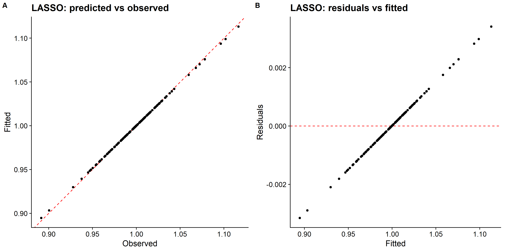
# looking at model performance
lasso_perfomance <- lasso_res %>% show_best(n = 1)
print(lasso_perfomance) # rmse: 0.0008## # A tibble: 1 x 7
## penalty .metric .estimator mean n std_err .config
## <dbl> <chr> <chr> <dbl> <int> <dbl> <chr>
## 1 0.0001 rmse standard 0.000867 25 0.0000252 Preprocessor1_Model01The RMSE is smaller compared to the single tree model, however the residual plot looks weird.
# query number of cores and see how much paralleization that can be done
cores <- parallel::detectCores()
cores # 4## [1] 4# pass information to ranger engine to set up the model
rf_mod <-
rand_forest(mtry = tune(), min_n = tune(), trees = 1000) %>%
set_engine("ranger", num.threads = cores, importance = "permutation") %>%
set_mode("regression")
# create workflow to bundle model spec and recipe
rf_wf <- workflow() %>%
add_model(rf_mod) %>%
add_recipe(rec_all_pred)
# show what will be tuned
rf_mod %>%
parameters() ## Collection of 2 parameters for tuning
##
## identifier type object
## mtry mtry nparam[?]
## min_n min_n nparam[+]
##
## Model parameters needing finalization:
## # Randomly Selected Predictors ('mtry')
##
## See `?dials::finalize` or `?dials::update.parameters` for more information.# use a space-filling design to tune, with 25 candidate models
rf_res <-
rf_wf %>%
tune_grid(folds,
grid = 25,
control = control_grid(save_pred = TRUE),
metrics = metric_set(rmse))
# 5 random forest models, out of the 25 candidates:
rf_res %>%
show_best(metric = "rmse")## # A tibble: 5 x 8
## mtry min_n .metric .estimator mean n std_err .config
## <int> <int> <chr> <chr> <dbl> <int> <dbl> <chr>
## 1 63 8 rmse standard 0.00520 25 0.000515 Preprocessor1_Model09
## 2 61 10 rmse standard 0.00563 25 0.000540 Preprocessor1_Model10
## 3 57 15 rmse standard 0.00651 25 0.000593 Preprocessor1_Model08
## 4 49 17 rmse standard 0.00756 25 0.000659 Preprocessor1_Model17
## 5 45 13 rmse standard 0.00763 25 0.000656 Preprocessor1_Model24# select the best model according to RMSE metric, and the final tuning parameter values are:
best_rf <-
rf_res %>%
select_best(metric = "rmse")
best_rf## # A tibble: 1 x 3
## mtry min_n .config
## <int> <int> <chr>
## 1 63 8 Preprocessor1_Model09# Finalize workflow with best values
final_rf_wf <- rf_wf %>%
finalize_workflow(best_rf)
# Fit model to training data
best_rf_train_fit <- final_rf_wf %>% fit(data = train_data)# estimate model importance based on the model's structure
vip_rf <-
best_rf_train_fit %>%
extract_fit_parsnip() %>%
vip()
vip_treeNumber of laps is the strongest predictor.
# some more diagnostics
rf_diagnostics <-
rf_res %>% autoplot()
ggsave(filename = here::here("tidytuesday2_figures", "random_forest_diagnostics.png"),
plot = rf_diagnostics,
width = 12, height = 6)
knitr::include_graphics( here::here("tidytuesday2_figures", "random_forest_diagnostics.png"))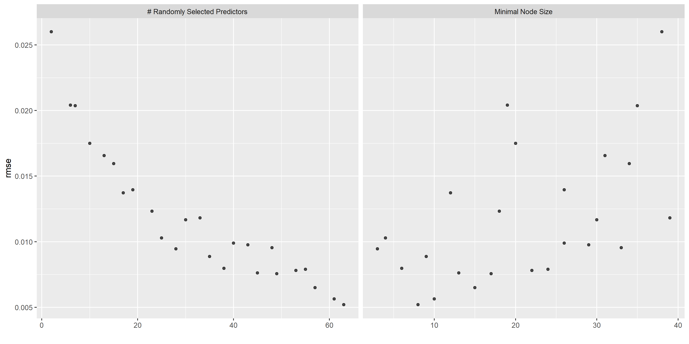
# pull predictions and residuals
rf_train_res <- best_rf_train_fit %>%
augment(new_data = train_data) %>%
select(.pred, std_time) %>%
mutate(.resid = std_time - .pred)
# plot Predictions vs observed values
p1 <- ggplot(rf_train_res, aes(x = std_time, y = .pred)) +
geom_abline(slope = 1, intercept = 0, color = "red", lty = 2) +
geom_point() +
cowplot::theme_cowplot() +
labs(
title = "Random forest: predicted vs observed",
x = "Observed",
y = "Fitted"
)
# Plot model predictions vs residuals
p2 <- ggplot(rf_train_res, aes(y = .resid, x = .pred)) +
geom_hline(yintercept = 0, color = "red", lty = 2) +
geom_point() +
cowplot::theme_cowplot() +
labs(
title = "Random forest: residuals vs fitted",
y = "Residuals",
x = "Fitted"
)
# combine graphs
random_forest_panel <- cowplot::plot_grid(p1, p2, labels = c('A', 'B'), label_size = 12, ncol =2)
ggsave(filename = here::here("tidytuesday2_figures", "random_forest_panel.png"),
plot = random_forest_panel,
width = 12, height = 6)
knitr::include_graphics( here::here("tidytuesday2_figures", "random_forest_panel.png"))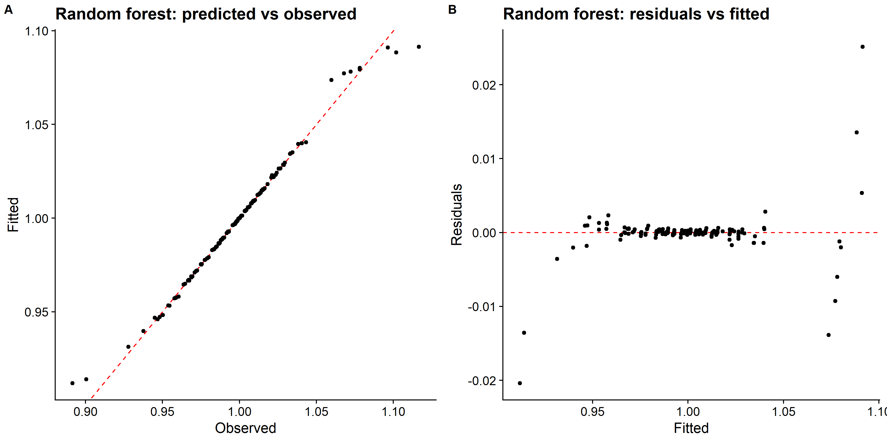
# looking at model performance
rf_perfomance <- rf_res %>% show_best(n = 1)
print(rf_perfomance) # rmse: 0.0059## # A tibble: 1 x 8
## mtry min_n .metric .estimator mean n std_err .config
## <int> <int> <chr> <chr> <dbl> <int> <dbl> <chr>
## 1 63 8 rmse standard 0.00520 25 0.000515 Preprocessor1_Model09The RMSE is larger than LASSO model but smaller than the tree regression model. The predicted vs observed and residual plots look good.
# parallel computing
doParallel::registerDoParallel()
# # bootstrapping
# set.seed(123)
# iono_rs <- bootstraps(train_data, times = 30)
# finalize the parameter ranges before optimizing
svm_parms <- svm_spec %>%
dials::parameters() %>%
dials::finalize(train_data %>% select(-titerincrease))
# Optimization of model parameters via simulated annealing
svm_res <- svm_wf %>%
tune_sim_anneal(
resamples = folds,
metrics = metric_set(rmse),
control = control_sim_anneal(
verbose = TRUE,
no_improve = 10,
radius = c(0.01, 0.25),
cooling_coef = 0.01
),
iter = 10,
param_info = svm_parms
)## ## > Generating a set of 1 initial parameter results## v Initialization complete## ## Optimizing rmse## Initial best: 0.09487## 1 <3 new best rmse=0.093905 (+/-0.003484)## 2 ( ) accept suboptimal rmse=0.10092 (+/-0.00391)## 3 <3 new best rmse=0.089384 (+/-0.003136)## 4 - discard suboptimal rmse=0.10895 (+/-0.004231)## 5 <3 new best rmse=0.084611 (+/-0.00166)## 6 ( ) accept suboptimal rmse=0.085066 (+/-0.002311)## 7 ( ) accept suboptimal rmse=0.085751 (+/-0.002535)## 8 ( ) accept suboptimal rmse=0.087062 (+/-0.002753)## 9 + better suboptimal rmse=0.086179 (+/-0.002611)## 10 - discard suboptimal rmse=0.10655 (+/-0.004151)# plot of performance for different tuning parameters
svm_diagnostics <- svm_res %>% autoplot()
ggsave(filename = here::here("tidytuesday2_figures", "svm_diagnostics.png"),
plot = svm_diagnostics,
width = 12, height = 6)
knitr::include_graphics( here::here("tidytuesday2_figures", "svm_diagnostics.png"))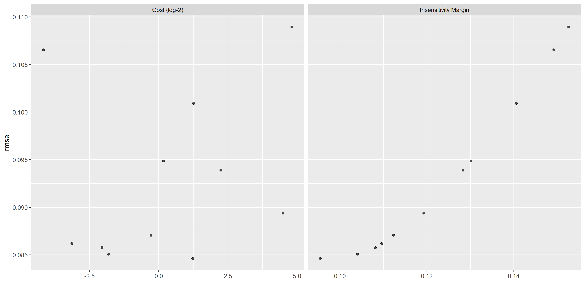
# Select single set of hyperparameter values for our best decision tree model
best_svm <- svm_res %>%
select_best(metric = "rmse")
# Finalize our workflow with best values
final_svm_wf <- svm_wf %>%
finalize_workflow(best_svm)
# Fit model to training data
best_svm_fit_train <- final_svm_wf %>%
fit(data = train_data)
# diagnostic plots
# getting predicted outcome and residuals
svm_train_res <- best_svm_fit_train %>%
augment(new_data = train_data) %>%
select(.pred, std_time) %>%
mutate(.resid = std_time - .pred)
# plot Predictions vs observed values
p1 <- ggplot(svm_train_res, aes(x = std_time, y = .pred)) +
geom_abline(slope = 1, intercept = 0, color = "red", lty = 2) +
xlim(-5,10)+
ylim(-5,10) +
geom_point() +
cowplot::theme_cowplot() +
labs(
title = "SVM: predicted vs observed",
x = "Observed",
y = "Fitted"
)
# Plot model predictions vs residuals
p2 <- ggplot(svm_train_res, aes(y = .resid, x = .pred)) +
geom_hline(yintercept = 0, color = "red", lty = 2) +
geom_point() +
cowplot::theme_cowplot() +
labs(
title = "SVM: residuals vs fitted",
y = "Residuals",
x = "Fitted"
)
# combine graphs
svm_panel <- cowplot::plot_grid(p1, p2, labels = c('A', 'B'), label_size = 12, ncol =2)
ggsave(filename = here::here("tidytuesday2_figures", "svm_panel.png"),
plot = svm_panel,
width = 12, height = 6)
knitr::include_graphics( here::here("tidytuesday2_figures", "svm_panel.png"))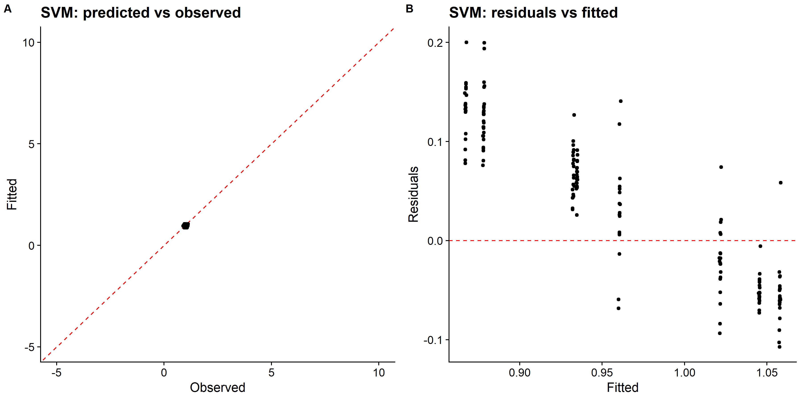
# looking at model performance
svm_perfomance <- svm_res %>% show_best(n = 1)
print(svm_perfomance) # rmse: 0.0492## # A tibble: 1 x 9
## cost margin .metric .estimator mean n std_err .config .iter
## <dbl> <dbl> <chr> <chr> <dbl> <int> <dbl> <chr> <int>
## 1 2.34 0.0955 rmse standard 0.0846 25 0.00166 Iter5 5The linear SVM model only predicted values of the standardized race time in a very small range, which looks like a single distinct value after rescaling, and the RMSE is the largest among all models so far. I should probably try other kernel SVM models such as polynomial or radical basis function that performs better for nonlinear decision boundary.
# Calculate the null RMSE and SE by boostrapping
res <- numeric(1000)
for (i in 1:1000) {
Bi <- as.numeric(unlist(train_data[sample(1:nrow(train_data), size = nrow(train_data), replace = TRUE), "std_time"]))
res[i] <- rmse_vec(
truth = Bi, estimate = rep(mean(train_data$std_time), nrow(train_data))
)
}
null_rmse <- tibble(
estimate = rmse_vec(truth = train_data$std_time,
estimate = rep(mean(train_data$std_time), nrow(train_data))),
std_err = sd(res)
)
null_rmse %>%
dplyr::mutate(across(everything(), ~round(.x, digits = 4))) %>%
knitr::kable(caption = "RMSE and boostrap SE (B = 1000) for the null model.")| estimate | std_err |
|---|---|
| 0.0299 | 0.0026 |
tree_RMSE <- tree_res %>%
show_best(n = 1) %>%
dplyr::select(estimate = mean, std_err) %>%
dplyr::bind_rows(null_rmse) %>%
dplyr::mutate(
model = c("Tree", "Null"),
rmse = round(estimate, 2),
SE = round(std_err, 4),
.keep = "unused"
)
svm_RMSE <- svm_res %>%
show_best(n = 1) %>%
dplyr::transmute(
rmse = round(mean, 2),
SE = round(std_err, 4),
model = "SVM"
) %>%
dplyr::bind_rows(tree_RMSE)
rf_RMSE <- rf_res %>%
show_best(n = 1) %>%
dplyr::transmute(
rmse = round(mean, 2),
SE = round(std_err, 4),
model = "Random Forest"
) %>%
dplyr::bind_rows(svm_RMSE)
all_RMSE <- lasso_res %>%
show_best(n = 1) %>%
dplyr::transmute(
rmse = round(mean, 2),
SE = round(std_err, 4),
model = "LASSO"
) %>%
dplyr::bind_rows(rf_RMSE) %>%
gt::gt(caption = "Comparison of RMSE values for all models.")
all_RMSE| rmse | SE | model |
|---|---|---|
| 0.00 | 0.0000 | LASSO |
| 0.01 | 0.0005 | Random Forest |
| 0.08 | 0.0017 | SVM |
| 0.01 | 0.0005 | Tree |
| 0.03 | 0.0026 | Null |
# save RMSE comparison table
rmse_location = here("tidytuesday2_figures", "rmsecomparison.Rds")
saveRDS(all_RMSE, file = rmse_location)We can see that LASSO had best fit compared to all other models. The predicted vs observed plot looks good, all the data points align well on the diagonal. So, I will fit the chosen LASSO model to the test data and evaluate the performance.
# evaluate how model perform on test set
last_rf_fit <- final_lasso_wf %>%
last_fit(split = data_split,
metrics = metric_set(rmse))
last_rf_fit %>%
collect_metrics()## # A tibble: 1 x 4
## .metric .estimator .estimate .config
## <chr> <chr> <dbl> <chr>
## 1 rmse standard 0.000757 Preprocessor1_Model1# rmse for LASSO model fitting on testing data
lasso_test_rmse <- collect_metrics(last_rf_fit) %>%
dplyr::select(rmse = .estimate) %>%
dplyr::mutate(data = "testing")
# rmse for LASSO model fitting on training data
lasso_RMSE_train <- lasso_res %>%
show_best(n = 1) %>%
dplyr::transmute(
rmse = round(mean, 4),
SE = round(std_err, 4),
model = "LASSO"
)
lasso_RMSE_train %>%
dplyr::transmute(
rmse, data = "training"
) %>%
bind_rows(lasso_test_rmse) %>%
gt::gt(caption = "Comparison of RMSE between traing and testing data using LASSO regression.")| rmse | data |
|---|---|
| 0.0009000000 | training |
| 0.0007565904 | testing |
The result shows that the final LASSO model fits were similar between training and testing data.